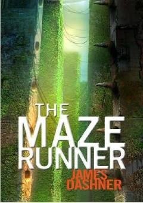

BLXotirasini yo'qotgan o'smir sirli labirint markazida uyg'onadi.
Bosh qahramon Tomas hech qanday xotirasiz, faqat ismi bilan qorong'i temir liftda uyg'onadi va g'alati o'smirlar yashaydigan sirli joyga kelib qoladi. U yerdan chiqish yo'lini topish va o'z o'tmishini eslash uchun ulkan devorlar bilan o'ralgan labirint sirini ochishi kerak.